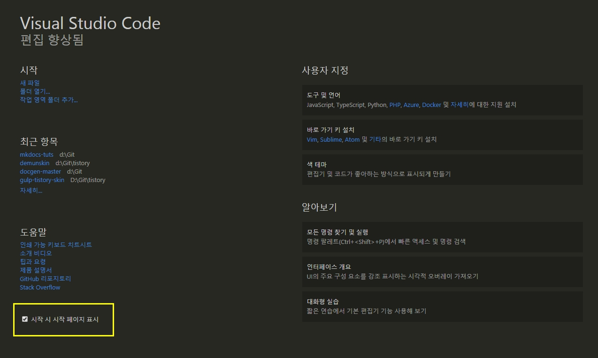
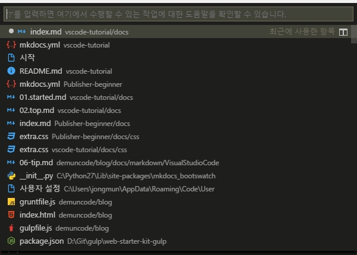
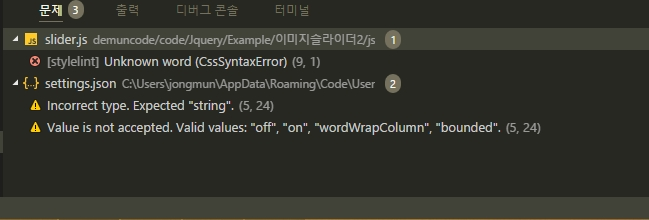
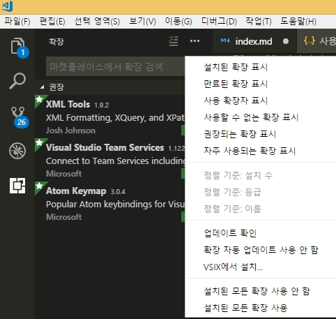
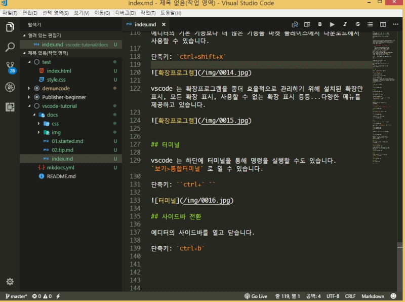
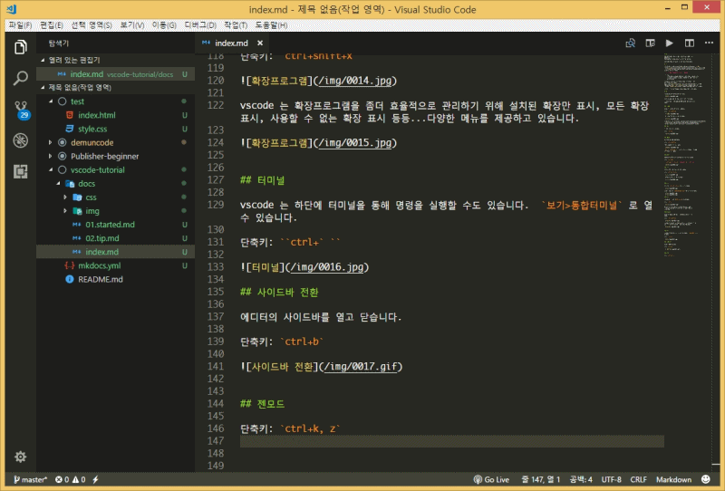
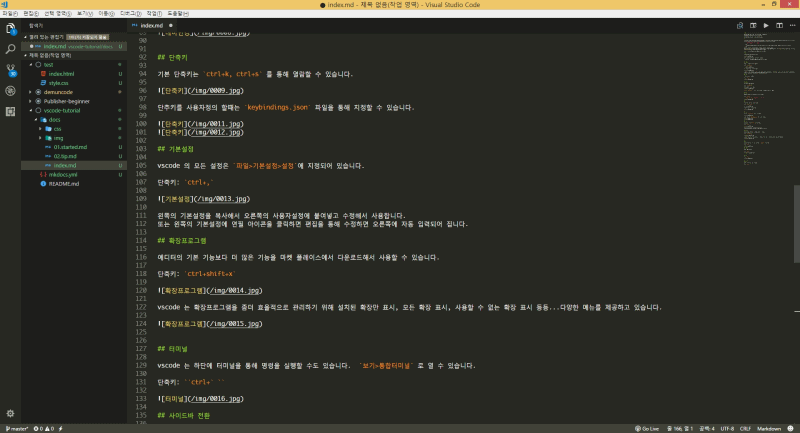
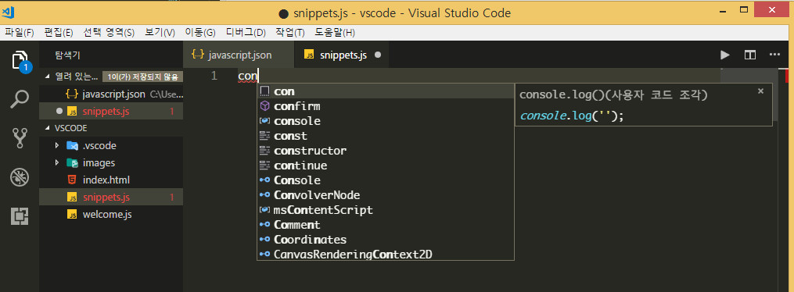
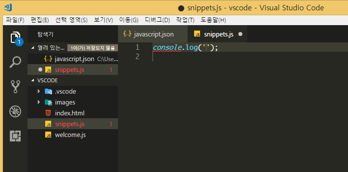

시작¶
비주얼 스튜디오 코드는 가볍고, 맥,리눅스,윈도우에서 모두 실행 가능하고, 무료인 코드편집기입니다. Sublimetext, Atom 에디터의 장점들을 잘 모아 만든 에디터입니다. 특히 서브라임텍스트의 한글입력 문제,인코딩 문제를 깔끔히 해결한 에디터입니다.
다양한 언어를 지원하며, 확장 프로그램을 통해 에디터 기능을 확장시킬수 있습니다.
설치¶
맥, 리눅스 를 통해 설치를 할 수 있으며, 윈도우는 인스트롤러를 통해 다운로드해서 설치를 진행할 수 있습니다.
윈도우는 .NET Framework 4.5.2 이상이 필요합니다.
Tip
설치 프로그램에서 vscode를 %PATH% 에 추가하므로 콘솔에서 'code'를 입력해서 해당 폴더에서 vscode를 열 수 있습니다. %PATH% 환경 변수를 변경하려면 콘솔을 다시 시작해야 합니다.
vscode 는 설치시 자동으로 설치되는 확장기능이 있습니다. 그런 확장기능을 이용하려면 따로 설치해야하는 요소들이 있습니다. git을 사용하려면 git-scm 을 설치해야하고, 자바스크립트 등의 확장기능을 이용하려면 nodejs 를 설치해야하며, TypeScript 등을 설치해야합니다.
추가적으로 이용할 도구에 따라 Yeoman, Gulp, Bower 등등을 설치할수도 있습니다.
기초¶
vscode 를 실행하면 첫화면에 시작하기 하면이 나옵니다.

시작할때 마다 보일수도 있고, 왼쪽 하단에 체크를 풀면 안나오게 할 수도 있습니다.
우측 하단에 알아보기 > 대화형 실습에서 직접 코드를 실행하고 결과를 볼수 있는 놀이터도 있습니다.
명령팔레트¶
에디터의 모든 명령에 바로 접근할 수 있는 명령팔레트입니다.
단축키: ctrl+shift+p
또한 우측에 보면 기본단축키로 명령을 실행할 수도 있습니다.

단축키에 대한 모든 명령은 맥, 리눅스, 윈도우 에 있습니다.
ctrl+p: 파일이나 기호를 탐색합니다.ctrl+shift+tab: 마지막 연 파일에 접근합니다.ctrl+shift+p: 편집기 명령으로 바로 이동합니다.ctrl+shift+o: 파일의 특정 기호로 이동합니다.ctrl+g: 파일의 특정 행으로 이동합니다.
ctrl+p 를 눌러 ? 를 입력하면 명령창에서 행할수 있는 명령 목록이 나옵니다.

빠른열기¶
모든 파일을 단축키로 빠르게 열수 있습니다.
단축키: ctrl+p

상태표시줄¶
에디터 하단에 현재 상태를 표시하고 있습니다.
단축키: ctrl+shift+m
신속하게 프로젝트의 오류 및 경로로 이동합니다.

F8 또는 shift+F8 을 이용해서 오류 사이를 이동할 수 있습니다. 또는 키보드의 위아래 화살표로 이동이 가능합니다.
언어모드¶
파일형식에 맞는 언어모드로 자동으로 인식하지만 못할때는 단축키로 지정할 수 있습니다.
단축키: ctrl+km
ctrl+km은ctrl+k을 누르고 다음으로m을 누르면 됩니다.

테마변경¶
기본적으로 제공하는 테마를 단축키로 빠르게 선택할 수 있습니다.
단축키: ctrl+k, ctrl+t

또한 파일>기본설정>색 테마 로 선택할 수도 있습니다.

파일아이콘테마¶
기본적으로 파일의 아이콘을 표시하지만 확장기능을 통해 직관적으로 파일의 아이콘을 보여줍니다.
파일>기본설정>파일 아이콘 테마 를 통해서 적용할 수 있습니다.

Material Icon Theme 를 설치한 후 적용한 아이콘테마의 모습입니다.

단축키¶
기본 단축키는 ctrl+k, ctrl+s 를 통해 열람할 수 있습니다.

단추키를 사용자정의 할때는 keybindings.json 파일을 통해 지정할 수 있습니다.


기본설정¶
vscode 의 모든 설정은 파일>기본설정>설정에 지정되어 있습니다.
단축키: ctrl+,

왼쪽의 기본설정을 복사해서 오른쪽의 사용자설정에 붙여넣고 수정해서 사용합니다.
또는 왼쪽의 기본설정에 연필 아이콘을 클릭하면 편집을 통해 수정하면 오른쪽에 자동 입력되어 집니다.
확장프로그램¶
에디터의 기본 기능보다 더 많은 기능을 마켓 플레이스에서 다운로드해서 사용할 수 있습니다.
단축키: ctrl+shift+x

vscode 는 확장프로그램을 좀더 효율적으로 관리하기 위해 설치된 확장만 표시, 모든 확장 표시, 사용할 수 없는 확장 표시 등등...다양한 메뉴를 제공하고 있습니다.

터미널¶
vscode 는 하단에 터미널을 통해 명령을 실행할 수도 있습니다. 보기>통합터미널 로 열 수 있습니다.
단축키: ctrl+`

사이드바 전환¶
에디터의 사이드바를 열고 닫습니다.
단축키: ctrl+b

젠모드¶
단축키: ctrl+k, z

나란히편집¶
에디터를 둘 또는 셋으로 나란이 놓고 사용할 수 있습니다.
단축키: ctrl+\

에디터간 전환은 ctrl+1, ctrl+2, ctrl+3 등으로 할 수 있으며, ctrl+w 누르면 탭이 닫힙니다.

다중커서¶
커서를 여러개 만들어서 한번에 작업을 할 수 있습니다.
단축키: ctrl+alt+up , ctrl+alt+down

행 복사¶
단축키: shift+alt+up , shift+alt+down

코드접기/펴기¶
단축키: ctrl+shfit+[ , ctrl+shfit+]

마크다운 미리보기¶
단축키: ctrl+shfit+v
또한 옆에서 미리보기를 하면서 수정까지 실시간으로 반영되게 할 수도 있습니다.
단축키: ctrl+kv

스니펫¶
vscode 는 기본적인 스니펫을 지원합니다. 또한 언어별로 확장기능을 통해 더 많은 스니펫을 지원합니다.
언어마다 필요한 스니펫은 마켓플레이스 에서 다운로드해서 사용할 수 있습니다.
나만의 스니펫도 만들수 있습니다.
파일 > 기본설정 > 사용자 코드 조각을 누릅니다.

자바스크립트에서 사용할 스니펫을 작성해보겠습니다.

javascript 를 입력하면 아래처럼 해당 파일이 선언됩니다.

아래처럼 구문을 작성해보세요. 예제로 console.log 의 구문입니다.

console_log: 아이디처럼 스니펫의 고유 이름입니다.prefix: 코드힌트에 나나타는 키워드입니다.body: 코드 부분입니다.description: 스니펫의 설명입니다.$1은 커서가 있는 곳입니다.$2는 두번째 커서가 머무는 곳입니다.
.js 파일을 만들고 con 이라고 입력해봅니다.
아래처럼 코드힌트로 스니펫이 나타나고 탭을 누릅니다.

스니펫이 입력되어지고 자세히 보시면 첫번째 커서가 머무는 곳이 보입니다. 작성후 탭을 누르면 두번째 위치에 커서가 이동합니다.

스니펫을 추가할 수도 있습니다.
아래처럼 jquery의 ready 구문을 입력해보겠습니다.

, 를 통해 다음 구문을 입력할 수 있고, \t 를 입력하면 탭 한개만큼 들여쓰기 합니다.
ready 를 입력하니 코드힌트가 나타납니다.

스니펫에서 본것처럼 커서 위치가 지정된채로 나타납니다.

스니펫의 더 많은 정보는 https://code.visualstudio.com/docs/editor/userdefinedsnippets 에서 볼 수 있습니다.
emmet¶
vscode 에서는 기본적으로 emmet 확장기능을 지원합니다.
젠코딩을 하면 툴팁으로 어떻게 보여지는 미리보기를 통해 보여져서 코딩하기 정말 좋습니다.

emmet 은 기본적으로 활성화되어 있어 바로 사용가능하지만 혹시 활성화가 안된다면 설정에 아래구문을 확인하면 됩니다.
"emmet.triggerExpansionOnTab": true